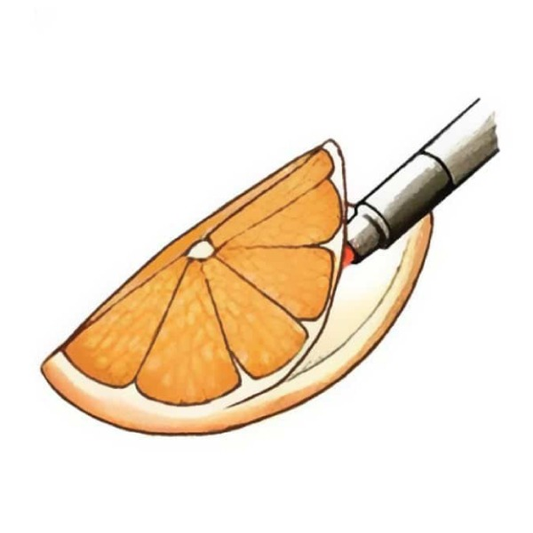
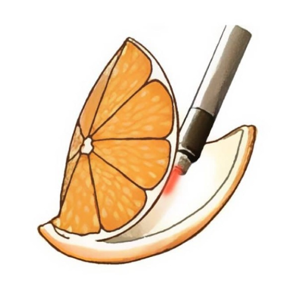
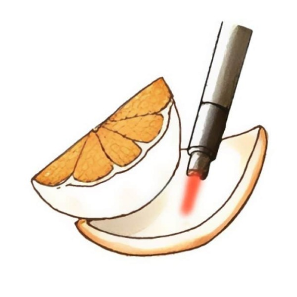

陳偉傑 醫師
『創造非凡精彩人生』
健康，其實是一個動詞，需要通過努力與踏實砌成的動詞，很多人會說奮鬥不一定會成功，但我們要說：「不奮鬥，絕對失敗」只有奮鬥過的人生，才能不留遺憾、才能更加精彩也才能至善至美。

攝護腺肥大是多數男性老年後會遇到的課題，現今醫療發達，有許多治療方式用侵入性最低的方式完成治療，出血少、傷口小，不需全身麻醉，即使年長者也可以安心進行手術！我們用大家常見的問答方式整理，讓大家輕鬆了解攝護腺肥大的治療與手術。
有以上這些症狀，建議找尋專業醫師提供攝護腺肥大的進一步診斷。
攝護腺肥大是現代男性老化自然產生的現象，又稱前列腺肥大。當攝護腺過度生長，組織細胞增生肥大，進一步壓迫尿道，影響排尿和射精，更嚴重者會壓迫膀胱讓尿液無法順利排空。
攝護腺肥大是當代常見的長壽病，60 歲以上男性發生機率為 5-6 成，超過 70 歲以上，發生機率可達 8 成以上。
攝護腺組織和包皮膜之間的關係，就像橘肉和橘皮。橘肉（攝護腺）會隨年紀增長而增肥，讓中間尿道被擠壓，導致排尿困難。因此目前的攝護腺肥大治療目標，就是透過不同的治療、手術方式，讓被壓迫的尿道再度寬敞、排尿順暢。
以「雷射剜除手術」為例，即是在不傷害包皮膜的情況下，用雷射將橘子果肉徹底剝除。其他手術採用不同手法，原理相似。

肥大的組織是果肉
外膜就是橘子皮

剜除術就像是在
不破壞果皮的情況下

透過手術
將果肉徹底剜除
輕微狀況，可使用藥物治療減緩症狀，讓平滑肌放鬆使排尿更容易，或幫助放鬆膀胱。
若病情嚴重，吃藥無法改善，則需動刀治療。將肥大的組織切除，有效根除狀況。
泌密會客室提供四種攝護腺肥大的手術，根據每位病患的病情、身體狀況選擇適合的治療手術方式。
| 手術方式 | 手術原理 | 適合對象 | 尿管置放期 | 優點 | 缺點 |
|---|---|---|---|---|---|
| 雷射剜除手術 | 用雷射光深切，先找出攝護腺組織和包膜的界面，在不破壞包膜情況下將組織徹底剝除。 | • 中-重度攝護腺肥大患者 | 1~2天 | • 手術效果最好 • 復發慢 • 可供病理化驗 • 無損性功能 | • 有逆行性射精*的併發症風險。 |
| 綠光雷射汽化 | 雷射光照射攝護腺組織，讓組織直接被汽化消失。 | • 中-重度攝護腺肥大患者 • 適合年齡較大、合併其他慢性病的患者 | 1~2天 | • 出血少 • 傷口小 • 無損性功能 | • 會留下少許組織 • 組織已被汽化消失，無法供病理化驗。 • 有逆行性射精*的併發症風險。 |
| 水蒸氣攝護腺消融術(Rezum) | 利用射頻能量，透過器械噴出高溫蒸氣，讓攝護腺組織壞死脫落，身體可自行吸收壞死細胞。 | • 輕-中度攝護腺肥大患者 • 年輕與年長患者皆適合 | 3~7天 | • 出血少 • 安全 • 不需住院 • 不需全身麻醉 | • 術後可能需要放幾天尿管 • 不能即期見效，要等2個月期間讓組織慢慢萎縮。 |
| 攝護腺擴開術(Urolift) | Urolift 是用兩根釘子將肥大的攝護腺組織像窗簾一樣，固定到兩旁讓尿道暢通。攝護腺組織因為受到兩端固定器擠壓的緣故，血流會愈來愈減少，逐漸萎縮。 | • 輕-中度攝護腺肥大的患者 • 適合較年輕患者 | 0~1天 | • 侵入性較低 • 不需放置尿管 • 不需住院 • 無損性功能 | 前列腺體積限30至80立方厘米，超出限制不適合進行手術。 |
*「逆行性射精」指的是有射精的感覺，但幾乎沒有精液射出的現象。這種現象通常是精液跑到膀胱裡，並不會影響健康跟身體。
不同攝護腺肥大手術所需要的麻醉如下：
「雷射剜除手術」、「綠光雷射汽化手術」需要半身或全身麻醉。
「水蒸氣攝護腺消融術」以及「攝護腺擴開術」可以採用舒眠麻醉或局部麻醉。
醫師會根據病患的年齡、身體狀況及麻醉風險，給予最適當的手術建議，降低風險。
陳偉傑 醫師
『創造非凡精彩人生』
健康，其實是一個動詞，需要通過努力與踏實砌成的動詞，很多人會說奮鬥不一定會成功，但我們要說：「不奮鬥，絕對失敗」只有奮鬥過的人生，才能不留遺憾、才能更加精彩也才能至善至美。
羅詩修 醫師
『捍衛男性泌密健康』
泌密健康，就四個字，但它並不會讓你一輩子都過得那麼容易，轉機就在於你堅強的那一刻，你的人生，會因為你的泌密健康，過得更性福美滿，也過得更加精彩

若持續嚴重阻塞，可能對身體有害。包含排尿不順、頻尿、夜尿，嚴重時則可能反覆感染、反覆血尿、膀胱結石和腎水腫。
不是。因每個人攝護腺肥大的嚴重度不同，是否有在早期就尋求專業診治、進行療程，也會影響到最終是否需要手術。建議有相關症狀出現或疑慮時，立即找尋專業醫師診治。
執行攝護腺手術後，都會放置尿管來監控攝護腺傷口止血狀況及等待組織消腫，因此術後會有幾天的尿管放置期，再根據病患恢復情形拔除。
尿管留置時間：
雷射剜除手術： 1-2 天
綠光雷射汽化： 1-2天
水蒸氣攝護腺消融術(Rezūm)： 3-7 天
攝護腺擴開術(Urolift)： 0-1 天
雷射剜除手術： 1.5-3 天
綠光雷射汽化： 1.5-3 天
水蒸氣攝護腺消融術(Rezūm)： 視個人狀況不同，可不需住院。
攝護腺擴開術(Urolift)： 視個人狀況不同，可不需住院。
手術一個月後，可逐漸恢復性生活。
目前的雷射跟微創手術都是最低能量的破壞，幾乎沒有能量傳導影響骨盆神經，性功能與控制排尿功能幾乎不會有影響。
不是。攝護腺肥大有分良性增生和攝護腺癌，需要手術後送檢驗才知道是哪一種。
【本資訊無法取代醫師親自關心您；若有副作用等使用問題，請洽醫師諮詢。】